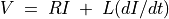
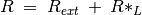
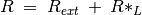

Transient Response of RL circuits¶
Objective
Explore the nature of current and voltage when a voltage step is applied to resistor and inductor in series. By measuring the voltage across the inductor as a function of time, we can calculate its inductance.


In an RL circuit  and solving this will give
 . The coefficient of the exponential term R/L
can be extracted from the graph of voltage across the inductor. The
resistance of the inductor coil should be included in the
calculations, .
. The coefficient of the exponential term R/L
can be extracted from the graph of voltage across the inductor. The
resistance of the inductor coil should be included in the
calculations, .
Procedure
- Inductor is the 3000 Turn coil
- Click on 0->5V STEP and 5->0V step Buttons to plot the graphs
- Adjust the horizontal scale, if required, and repeat.
- Calculate the value of inductance
- Insert an iron core into the inductor and repeat
Discussion
The transient response of the RL circuit is shown in figure. The exponential curve is fitted to extract the L/R value. The resistance of the coil is measured by comparing it with the known external resistance under DC conditions. A2 is connected to OD1 for a more accurate measurement of the coil resistance.
The applied voltages are above zero, but the graph went to negative voltages. Why ?
What was the current before doing the 5->0 step ? What is back EMF ?
Repeat with two coils in series, by (a) placing them far away (b) placing one over the other and (c) after changing the orientation. The effect of mutual inductance can be seen.